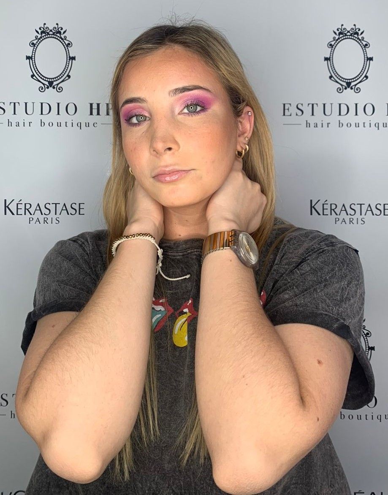
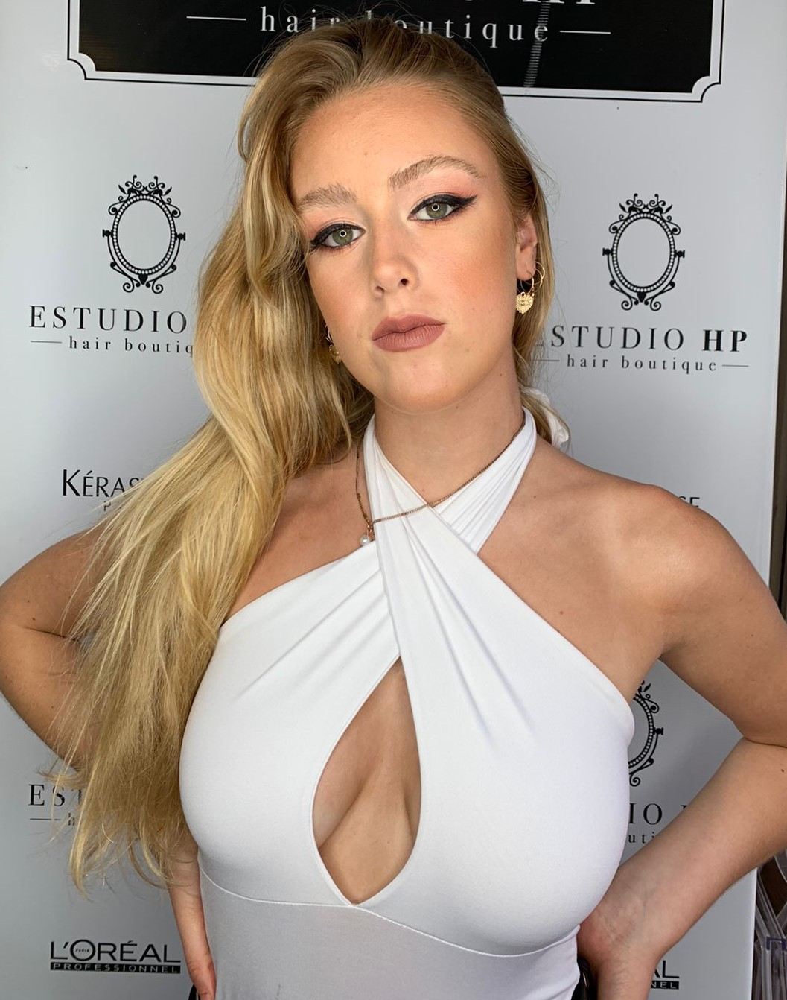
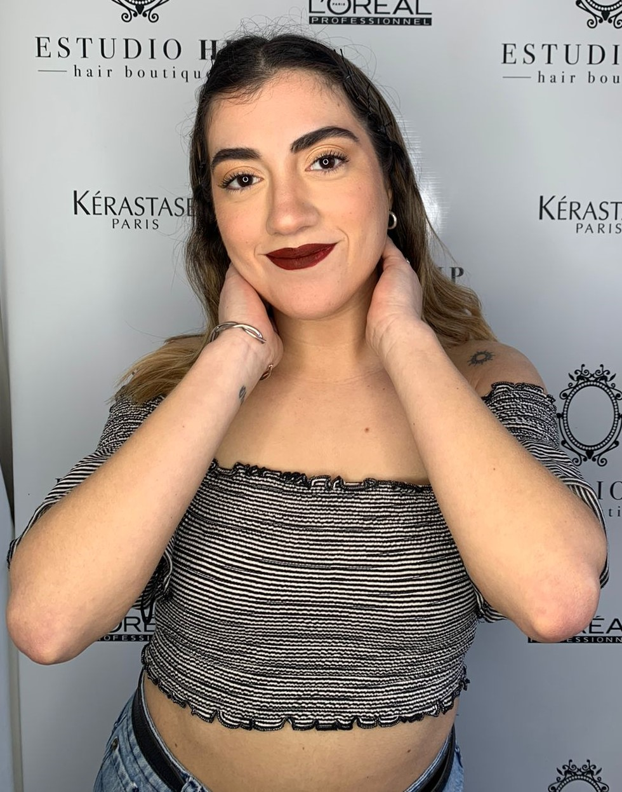
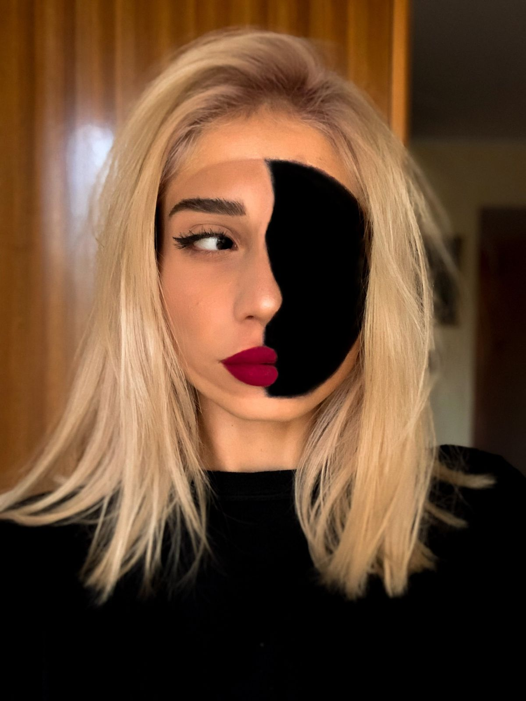
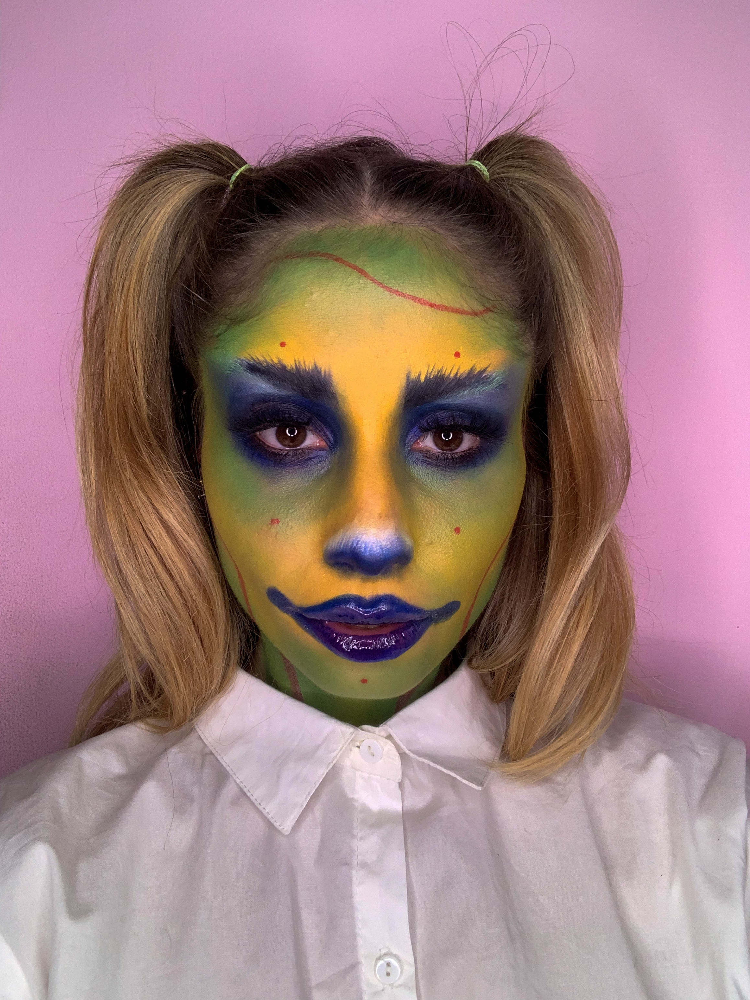
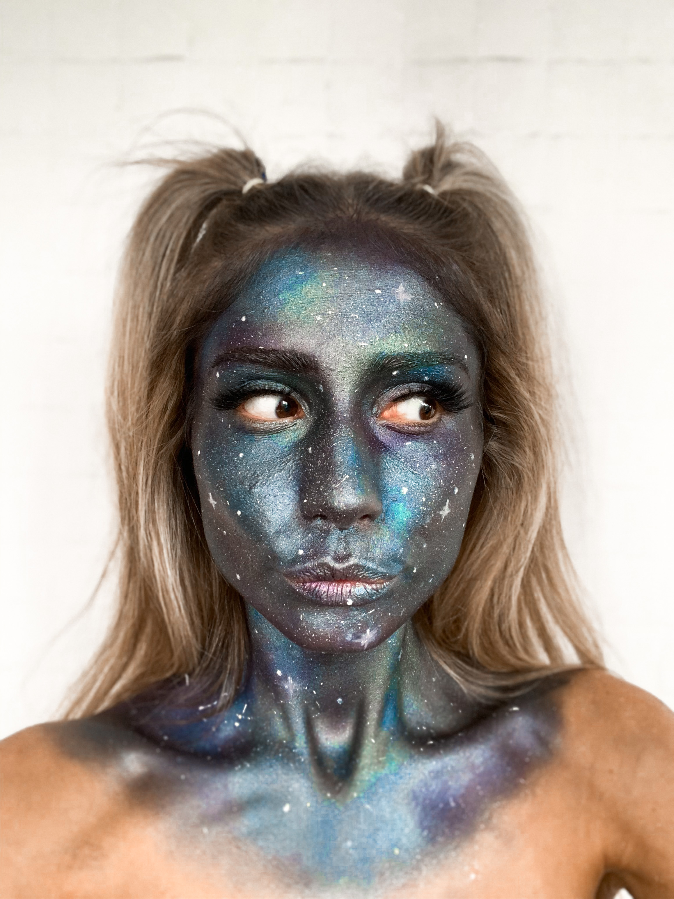

Algunos de mis trabajos
Editorial/Producciones
Son maquillajes frescos que resaltan lo natural de la modelo y que acompañan a la campaña que se va a realizar. El trabajo se desempeña en conjunto con la marca, donde se debe cumplir con las exigencias que determine la misma.
Social



Maquillaje ideal para fiestas, casamientos, egresos, quinceañeras, etc. Es un maquillaje donde el cliente es el protagonista y se busca resaltar su belleza según la tipología y caracteristica del rostro. Puede ir desde un maquillaje natural a uno más cargado aplicando las últimas tendencias.
Artístico



Maquillaje para fiestas de disfraces, halloween, teatro y eventos en general, donde se utilizan productos cremosos, ceras, calvas y todo lo necesario para lograr el efecto deseado.